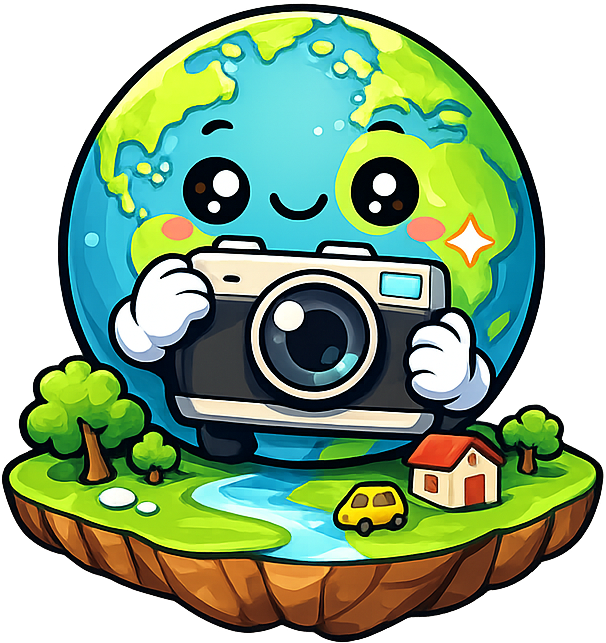
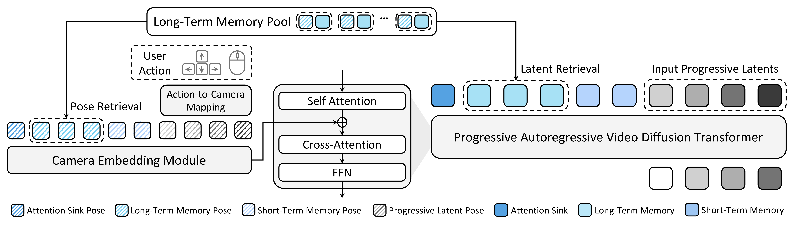
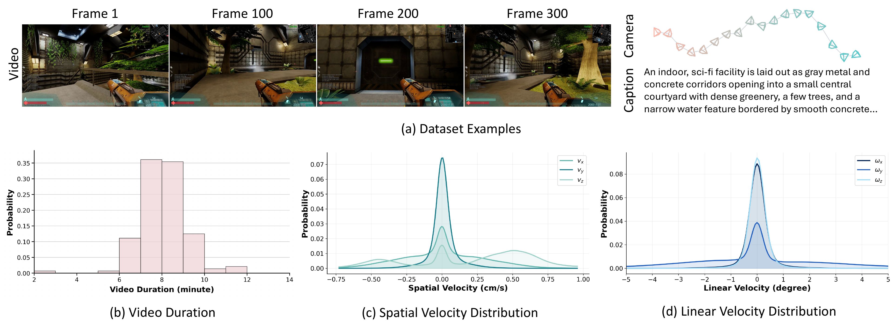

WorldCam: Interactive Autoregressive 3D Gaming Worlds with Camera Pose as a Unifying Geometric RepresentationWorldCam is an interactive 3D gaming model that enables precise action control under challenging keyboard/mouse inputs, supports long-horizon interactions, and maintains consistent 3D geometry across viewpoints. We achieve this by using camera poses as a unifying geometric representation. We further introduce WorldCam-50h, 50 hours of human gameplay video dataset annotated with camera poses and text captions.
WorldCam enables precise action control through complex, entangled keyboard and mouse inputs, while generating long-horizon sequences (e.g., 10 seconds at 20 FPS).
WorldCam preserves the underlying 3D scene structure even when the generated frames extend beyond the denoising window.

Overall architecture. WorldCam converts user actions into camera poses in Lie algebra and conditions a progressive autoregressive video transformer on these camera poses for precise action control. Retrieved long-term memory latents and camera poses from the memory pool enforce 3D consistency of the generated world, while short-term memory with an attention sink stabilizes long-horizon generation.
We will release open-licensed dataset from Xonotic and Unvanquished, licensed under CC BY-SA 2.5 and GPL v3.

Dataset samples and statistics: We collect 3,000 minutes of authentic human gameplay annotated with camera trajectories and textual descriptions. (a) Example gameplay frames annotated with camera trajectories, and text captions. (b) Distribution of video durations. (c) Distribution of linear velocities (vx, vy, vz). (d) Distribution of angular velocities (ωx, ωy, ωz).